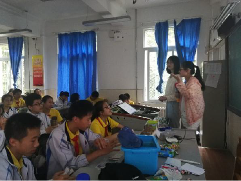
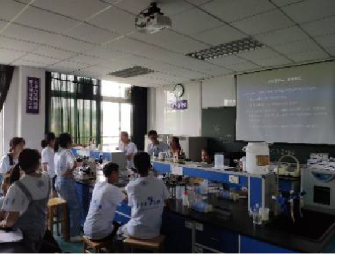

Integrated Human Practice
Investigation


Since the banana fibers are similar to ramie in their composition, we decided to visit Hubei Jinghua Textile Group in Wuhan in order to find out the status quo of the degumming technology of natural plant fibers. We can feel a kind of pungent smell the moment we got into the workshop. We interviewed the company director and find out that they used chemical degumming technology in majority to treat ramie. He also complained about the disadvantages of traditional chemical degumming methods to us. For example, the fibers dealt by chemical degumming methods are inferior in quality. In addition, this way produces a large amount of sewage which is difficult to treat. And the poor working conditions caused by the chemical waste do great harm to worker’s health.

While visiting, we stumbled upon a defunct biological degumming device. The manager explained that the biological degumming method has once been taken into practice but disposed of since it had some problems in practical application. The most prominent problem is that the environmental conditions required for bio-degumming are too strict, resulting in high cost of bio-degumming. We decided to learn from the failure of biological degumming of ramie and make our project connected more to the reality and fit in the factory operations. As a result, we add a PH feedback system to make our engineering organism more intelligent and able to make autonomic response to the environmental changes.
Field trip
Xuwen, in Zhanjiang City, Guangdong province, is known as the first county in China for banana planting. We went to Xuwen this summer to take a knowledge of the current situation of banana stalks treatment. We talked with the county party secretary of Xuwen about the banana planting and the method to disposing remanent stalks. He claimed that they really didn’t know how to deal with the banana stalks in applicable ways. In normal, they just cut them down and pile up a part of them in the farmlands as fertilizer. And they had to discard the rest of them just beside the streets which is really a waste of space.

We also communicated with the leaders and experts of the local Agriculture Bureau and introduced our project and synthetic biology to them. We gave out our brochures of our project to them and they were looking forward to the industrialization of our project. They claimed that it is much better than the chemical methods which made a lot of pollution and will solve a big problem in the banana planting industry.

During our field trip to the farmlands, we found that the banana industry was hit by a kind of fungal infection-- banana panama disease. The fungus causing this disease is Fusarium oxysporum which infects banana in special. During our talk with the experts, we found out that this fungus can infect the banana trees through soil and water. We put forward that it has a large possibility that the fast spread of banana panama disease is connected to the straw compost. In the previous year, the fungus in the banana stalk penetrated into the soil due to composting behavior, and then infected with new seedlings. The experts agreed with this guess and that the treatment of banana stalks today does exacerbate the spread of banana panama disease. As a result, our project may help with the banana industry not only by disposing of waste and increasing production value, but also by alleviating the damage caused by banana panama disease to the banana industry.
Banana panama disease: fungi disease caused by Fusarium oxysporum f. sp. Cubense infection and spread around the world. It will make banana withering and die away gradually. In general, 3-5 years is must to soil recovery.

We also communicated with the leaders and experts of the local Agriculture Bureau and introduced our project and synthetic biology to them. We gave out our brochures of our project to them and they were looking forward to the industrialization of our project. They claimed that it is much better than the chemical methods which made a lot of pollution and will solve a big problem in the banana planting industry.
During our field trip to the farmlands, we found that the banana industry was hit by a kind of fungal infection-- banana panama disease. The fungus causing this disease is Fusarium oxysporum which infects banana in special. During our talk with the experts, we found out that this fungus can infect the banana trees through soil and water. We put forward that it has a large possibility that the fast spread of banana panama disease is connected to the straw compost. In the previous year, the fungus in the banana stalk penetrated into the soil due to composting behavior, and then infected with new seedlings. The experts agreed with this guess and that the treatment of banana stalks today does exacerbate the spread of banana panama disease. As a result, our project may help with the banana industry not only by disposing of waste and increasing production value, but also by alleviating the damage caused by banana panama disease to the banana industry.
Banana panama disease: fungi disease caused by Fusarium oxysporum f. sp. Cubense infection and spread around the world. It will make banana withering and die away gradually. In general, 3-5 years is must to soil recovery.
Interview
Eduction & Public Engagement
Giving a biology class

In order to introduce synthetic biology to young students and show them the magic of Biology, we cooperated with HBUT-China and went to Tongji Affiliated Secondary School to teach the students there a biology class. During the class, we taught them a lot of knowledge of biology and took them to the gate of synthetic

Hosting the summer camp
To promote our projects and iGEM’s influence, we hosted a summer camp for high school students who visited our college. We taught them to do microbiology experiments and explain our project to them. We told them the disadvantages of chemical degumming methods and what problem we can solve if our

Online research